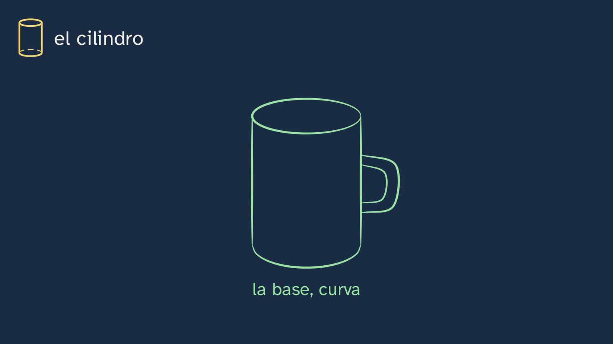
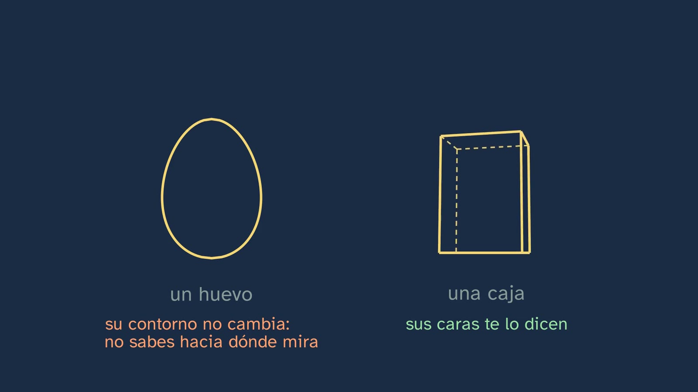
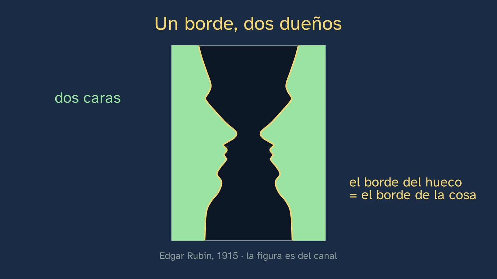
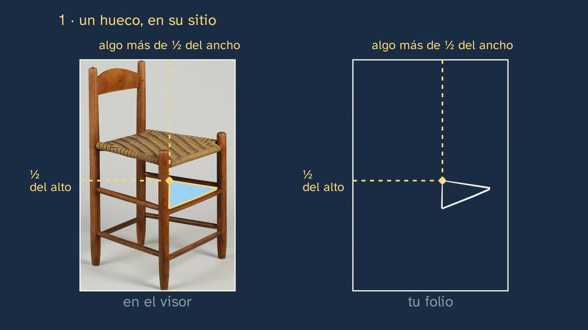
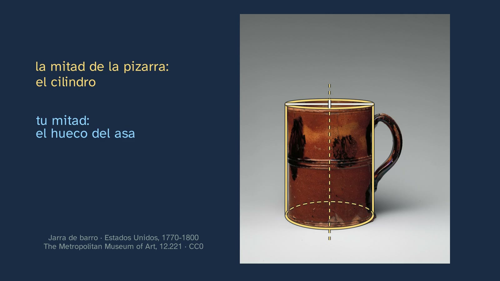

Simple shapes and gaps
In a nutshell
This is the channel's second Artistic Drawing workshop, with Marina in a smock in the art room. Class 1 taught that we don't draw what we see, but what we know about things; class 2, how to measure with the pencil. This one teaches what to look at, so that what you know about a complicated object doesn't draw for you. And it gives two ways of tricking what you know: looking for its simple shapes and looking at its gaps.
It opens with the solutions to class 2 and with a letter. On 15 April 1904, Paul Cézanne repeated a piece of advice to Émile Bernard: «traiter la nature par le cylindre, la sphère, le cone, le tout mis en perspective» ("treat nature in terms of the cylinder, the sphere and the cone, everything put in perspective"). The board draws those solids on top of one of his still lifes from the Met.
Simple shapes. First, the solid used most: the cylinder. Students predict which ellipse of a glass looks rounder, the rim or the base, and the board calculates it in perspective while the eyes move up and down. The further a circle is from your eye level, the more open its ellipse looks: at eye level it is a line, and that is why the base of a mug on the table doesn't look straight. Then come two typical mistakes (the straight base and the ellipse with points, like a lemon) and the trick: the cross, measured with the pencil, and the axis, which crosses the ellipses through their narrowest part. Why solids? It is an old workshop idea: in 1538, in Nuremberg, Erhard Schön taught how to position figures by drawing them with boxes. An egg and a box turning at the same time explain it: the box tells you which way it is facing, and the egg doesn't. Bridgman wrote it in 1920: "The block moreover carries with it from any angle its perspective and its foreshortening". The complete example is an earthenware teapot by Arij de Milde (Delft, 1671–1708), one step per board: squinting, measuring the largest mass before drawing it, the sphere with its axis and its ellipse, the lid and the foot on the same axis, the spout and the handle, checking and, at the end, the outline on top.
Gaps. A vase-and-faces figure drawn by the channel shows that an edge has two owners: if you draw the edge of a gap, you have also drawn the edge of the thing. You almost never see both figures at once, and in monkeys, neurons were found in the visual cortex that respond to the same edge depending on which side the figure is on (Zhou, Friedman and von der Heydt, 2000; later confirmed in other laboratories). The board draws the experiment just as it was done. And another reason: a gap has no name, so you can't draw what you know. Students predict the shape of a gap in the Shaker chair from class 2: it is a triangle that doesn't exist in the chair, closed by a front rung and a side one. Then comes the method, which is Betty Edwards's exercise (1979): the card viewfinder with the shape of the sheet, whose frame is the edge of the sheet; the first gap, placed by its fractions; the others, like a puzzle; the tone that makes the chair jump out; and the check, gap by gap. The proof comes after the method: the drawing done gap by gap, on top of the photo, hardly strays, and a chair from memory (invented, and the class says so) strays a lot. Gaps make you look in a different way and are useful, above all, for slants; measurements, with the pencil.
The class closes with class 2's mug, half done in both ways (the board puts in its cylinder; students, the handle's gap), the typical mistakes, three exercises and what nobody tells you: the sentence that goes around, "everything in nature is modelled on the sphere, the cone and the cylinder", is not the one in the letter. Bernard published it in L'Occident in July 1904, in a list of "Cézanne's opinions". Cézanne replied on 25 July: "I do not want to be right in theory, but in front of nature". From there, the open question.
Objective. By the end, students will know how to block in a complicated object with its simple shapes (transparent, with its axis and its ellipses properly placed) and with the gaps it leaves, and how to check their blocking-in by comparing its gaps with those of the model.
For readers outside Spain: the Bachillerato is the last two years of secondary school (ages 16–18); it follows ESO, the four years of compulsory secondary education (ages 12–16). Artistic Drawing I is a compulsory subject in the first year of the Arts strand of the Bachillerato. The BOE is Spain's Official State Gazette, where every law and decree is published. Spain is divided into seventeen autonomous communities (regions), plus the autonomous cities of Ceuta and Melilla; each completes the national curriculum with its own, and this sheet mentions one of them, Madrid. The video is in Spanish, with English subtitles; the images on this sheet come from the video and keep their Spanish text. Spanish documents (the decrees) are quoted in our translation; English sources are quoted in the original, and French ones in the original with our translation alongside. Decimals are written here with a point (2.41), not with the Spanish comma.
Curriculum
Spain's Royal Decree 243/2022, annex II, Artistic Drawing, a compulsory subject in the first year of Bachillerato in the Visual Arts, Image and Design pathway. Quotations checked in the BOE's consolidated text (its latest update, of 02/07/2026, does not touch annex II). Our translation of the official Spanish text.
| Element | What the decree says | Where the class works on it |
|---|---|---|
| Core knowledge (block B, "Graphic expression and its basic resources") | "Form: typology, applications and combinations." | Simple shapes: the cylinder and its ellipses (2:30–3:54), why solids (3:54) and the teapot (5:01–6:58) |
| Core knowledge (block B) | "The sketch or rough. Introduction to blocking in." | Blocking in the teapot, and blocking in the chair by its gaps (9:09–10:45) |
| Core knowledge (block C, "Perception and the ordering of space") | "Foundations of visual perception." | One edge, two owners: figure and ground, and the neurons that decide it (7:05–8:32) |
| Specific competence 8, description | "Through framing and blocking in, that information is organised on the chosen support and proportions are established, taking perspective into account, both in the forms and objects and in the space around them" | The forms (the solids, with their perspective) and the space around them (the gaps) |
| Specific competence 6, description | "it is essential to understand how the visual perception we start from works, its laws and principles"; "Drawing thus becomes a method for analysing forms" | The vase and the faces, and the solids as an analysis of form |
| Specific competence 3, description | "making sketches based on the detailed observation of reality" | Looking at the real object (the teapot, the chair, the mug) before drawing it |
| Criterion 3.2 | "To analyse, interpret and graphically represent reality by means of sketches and roughs…" | The teapot and the chair, step by step |
| Criterion 6.1 | "To use the mechanisms of visual perception, its laws and principles, with communicative or expressive intentions…" | Using figure and ground to draw: the gap as a figure |
| Criterion 8.1 | "To represent the chosen model graphically, selecting and abstracting its most representative features, based on its study and analysis." | Reducing an object to its solids: abstracting the large things before the details |
| Criterion 8.2 | "To use framing, blocking in and perspective to solve problems of graphic representation, analysing both the different volumes and the space that completes the whole." | The volumes (the solids, in perspective) and the space that completes the whole (the gaps, with the viewfinder) |
What students need to bring. From ESO (Royal Decree 217/2022, Visual and Audiovisual Arts Education), form and perceptual principles. From Mathematics, geometric solids (cylinder, cone, sphere, prism). From class 1, that we draw what we know (2:07); from class 2, measuring proportions with the pencil (0:21).
What Madrid asks for. The curriculum of the Community of Madrid (Decree 64/2022) proposes blind contour drawing in the first year. The topic sheet put it in this class; the video already has two methods, so it goes on the student worksheet, as a one-minute warm-up, and in the lesson plan.
How the class is built
Video chapters
Almost fifteen minutes, in sixteen chapters. It is a workshop: students draw the teapot at the same time as the board if they want to, complete the mug with the video paused and come away with a home-made viewfinder. It follows the department's model, look, measure and draw, with two complete examples (the teapot, in solids; the chair, by its gaps), one half-done (the mug, in both ways) and three on their own (the exercises). Each step of a procedure goes on its own board, with a silence after it for pausing, and the voice slows down only in the detailed steps.
| Chapter | What happens | Why this way |
|---|---|---|
| What we'll see | Marina introduces the workshop. The topic map and what is needed: a pencil, a sheet of paper, a pair of scissors and a piece of card (0:06). | The map, in every class. |
| What you already know | What do you transfer to your sheet when you measure with the pencil? (0:21). Proportions, not centimetres; what's new is what to look at (0:32). | Retrieving class 2, which is still being used. |
| The solutions | The three exercises from class 2, each with its statement: your bottle or your mug, the chair (one and two-thirds times) and the bent elbow (0:45). | ADR-112: the solutions open the next class, kept brief. |
| Cézanne's letter | On 15 April 1904, the letter to Bernard, in French and translated, next to one of his still lifes with the solids drawn on top (1:32). | The hook, with its context. |
| What you know tricks you | "The teapot you know", drawn from memory, next to the real one; the two ways of tricking what you know (2:07). | The problem, before the tools. |
| A cylinder, drawn right | Which looks rounder, the rim of the glass or its base? (2:30, pause). The base: the student in profile lowers and raises her eyes and the ellipses are calculated in every frame (2:49). The straight base and the ellipse with points (3:14). A cylinder from a blank sheet: the two crosses, the height copied along the width (it fits 3 times and a bit), the axis and the ellipses through the ends of their crosses (3:34). | Predicting and checking with geometry; the mistake next to the correct version (Draw Mix Paint). |
| Why solids | Schön's box figures (1538), with the magnifying glass (3:54). In which one can you see which way it is facing, the egg or the box? (4:12, pause). Bridgman, and the cylinder that tilts with its axis (4:42). | The reason for solids: they carry their perspective inside them. |
| A teapot, in solids | Six steps, one per board: squinting (5:01), the largest mass measured first and drawn with its axis (5:23), the lid and the foot on the same axis (5:53), the spout and the handle (6:16), checking (6:28) and the outline on top, with the lines inside (6:37). Marina, halfway through (6:58). | The complete example, slowly, with the model and the sheet at the same scale (Proko). |
| One edge, two owners | What do you see? (7:05, pause). The same line belongs to the vase and to the faces (7:16); you almost never see both at once (7:44); the neuron experiment, drawn (7:56); the gap with no name (8:17). | Thinking about what you look at (ADR-123), with the science of perception. |
| The gaps in the chair | What shape is this gap? (8:32, pause). A triangle that doesn't exist in the chair; none of the gaps is a rectangle (8:52). | Predicting, and discovering that the gap is what is seen. |
| The viewfinder and the puzzle | The 7 × 10 cm viewfinder and the chair touching the top and the bottom (9:09); the frame is the edge of the sheet (9:37); the first gap, by its fractions (9:47); gap by gap (10:11); the gaps filled in on the white paper, and the chair jumps out (10:28); the check (10:36). | Edwards's method, with the frame as the reference (Draw Mix Paint). |
| The test | The gap drawing and the chair from memory, on top of the photo (10:45); what gaps are for (11:13). | The overlay, which none of the reference channels does. |
| Your turn: the mug | The board puts in the mug's cylinder (11:23); students, the handle's gap, with the magnifying glass (11:39); the solution (11:50). | The half-done example, in both ways. |
| Typical mistakes | The schema, the details before the large things, and gaps that don't measure (12:06). | The mistake in plain sight, all together and with its drawing. |
| Practice | Three exercises, each with its image (12:44). | Practice with their own objects and with another teapot. |
| What Cézanne wrote | The letter and Bernard's version, one above the other (13:23); Cézanne's reply (14:00); the open question (14:11); the next class (14:27). Marina says goodbye (14:35). | What nobody tells you, and the question it leaves. |
Bridges with other subjects. Mathematics: geometric solids; central perspective (the glass's ellipses are a projection). Biology: vision, figure and ground, the visual cortex. Technical Drawing: views, hidden edges (the transparent solids). Art History: Cézanne and the move into the 20th century.

A plan for a 50-minute lesson
Designed for watching in class with a projector, with sheets of paper, a pencil, scissors, card and a mug or a glass per pair. If the video is watched at home, the session can be devoted to the activity.
| Minutes | What is done |
|---|---|
| 0–3 | No video. Blind contour drawing: one minute looking at your hand, without looking at the paper. |
| 3–10 | Video up to "Why solids" (0:00–3:54). Stop at (2:30): each student looks at a glass on their desk from above and decides which ellipse is rounder. |
| 10–17 | Video up to Marina's appearance halfway through (3:54–7:05). Whoever wants to draws the teapot at the same time, pausing at each step. |
| 17–25 | Video to the end (7:05–14:46). Stop at (11:39): the handle's gap, on the sheet, about two minutes. |
| 25–47 | The activity: "The classroom chair, by its gaps". |
| 47–50 | The open question, for the video's comments or for the next class. |
Typical mistakes and how they are handled
With the usual warning: none of them has been measured with Spanish Bachillerato students. They are the ones described in handbooks and by the reference channels, and their figures are the channel's calculations, run (the class's calculos.py).
- Drawing the schema instead of the thing. The root of them all (12:06). The mug with a straight base, because we know it rests on the table; the rim as a circle, because we know it is round (Thouless's plate from class 1); a chair's rungs horizontal and its four legs ending at the same height, because that is what the chair is like. In the Met's photo, the bottom rung on the right rises 28° and each leg ends at a different height (10:45).
- A glass's base straight, or as open as the rim. The further from eye level, the more open the ellipse: with the eyes 30 cm above the table and a 10 cm glass 45 cm away, the rim looks 41% as high as it is wide and the base, 56% (2:49). At eye level, the ellipse is a line.
- The ellipse with points. An ellipse is round on both sides (3:14). It is corrected by drawing the cross first (its width and its height) and measuring how many times the height fits into the width.
- The axis crooked in relation to the ellipse. The axis passes through the centre of the ellipses and crosses them through their narrowest part, at right angles to the widest (3:34). If the axis tilts, the ellipses turn with it (4:42).
- Starting with the details. If you start with the teapot's flowers, the body comes out whatever size it happens to be (12:06). First the large things, measured.
- Believing that gaps measure everything. Gaps are useful, above all, for checking slants; measurements, with the pencil (11:13). The study by Carson et al. (2014, Art & Perception), with 34 drawings, finds that people draw more accurately in orientation with negative space, and in proportion with positive space; it is a small study and the class doesn't use it as evidence.
- Thinking that a gap is a "real" gap. The chair's triangle doesn't exist in the chair: it is formed by two rungs on different sides, one in front of the other (8:52). That is why you draw what you see, not what you believe is there.

Questions and solutions
Stop and think (in the video)
- What do you transfer to your sheet when you measure with the pencil? (0:21, no countdown). Proportions: how many times one part fits into another. Not centimetres.
- The rim of the glass and its base: which looks rounder? (2:30). The base: it is further from eye level. Calculated in perspective (eyes 30 cm above the table, a 10 cm glass 45 cm away): rim 0.41 and base 0.56. If you lower your eyes to the rim, the rim becomes a line; if you raise them, both open out.
- An egg and a box turn at the same time: in which one can you see which way it is facing? (4:12). In the box: its faces and its corners tell you which way it is turning and how much it is tilting. The egg, which turns on its long axis, has no faces or corners: its speckles show that it is turning, but its drawing, the outline, doesn't change, and you can't tell which way it is facing. Drawn, the box changes with every turn.
- What do you see? (7:05). A vase or two faces: both readings are correct, and you almost never see them at the same time.
- What shape is this gap, between the two front legs? (8:32). A triangle (of 66°, 32° and 82°, measured on the photo). There is no triangle in the chair: it is closed by the top front rung and the top rung on the right side, which is further away; to the eye, they cross next to the right-hand leg.
The mug, half done (11:39). The handle's gap is almost two and a half times taller than it is wide (2.41, measured on the photo). It is wider at the top (126 px at 15% of its height) than at the bottom (68 px at 85%), and its left side, the mug's side, is almost straight (it deviates by 14% of its height). On a phone, the gap measures little more than a centimetre on screen without the magnifying glass: that is why the class enlarges it and says "compare it by eye".
Practice (the solutions, at the start of class 4)
- Three objects from your home, with their solids. Everyone has their own. What gets corrected: the solids drawn transparent (the edge or the ellipse at the back, dashed), the axis crossing each ellipse through its narrowest part, the lower ellipse more open than the upper one if the object is below eye level, and the proportion of the largest mass measured with the pencil. For example: a lamp with a shade is a truncated cone over a narrow cylinder, with a low cylinder as its base; a bottle, a cylinder and a cone; a backpack, a box.
- The gaps of a chair or a bike, with the viewfinder. Everyone has their own. What gets corrected: that the chair touches the frame on two sides, that the first gap is placed by its fractions, that neighbouring gaps leave the thickness of the piece between them, and that, when they are filled in, the object appears. On a bike, the big gap is the triangle of the frame.
- Paul Revere Jr.'s silver teapot (Met 69.147). A cylinder (the body); a truncated cone (the shoulder, which narrows towards the lid); a low cylinder and half a sphere (the lid and its dome); a small ball and a small cone (the finial, shaped like a pine cone); a long, narrow, straight cone (the spout); and a bent tube (the handle, made of wood). The body's axis passes through the centre of all its ellipses; the spout's is tilted.
Keep thinking. If you reduce the world to cylinders, spheres and cones, you gain order. What is lost? It has no single answer. Clues for the debate: what is irregular (one of Cézanne's apples is not a perfect sphere, and the board shows it at 14:11); texture, colour, what makes a thing unique; and Cézanne's own sentence to Bernard, "I do not want to be right in theory, but in front of nature" (25 July 1904). One possible reading, to discuss: solids are scaffolding for looking, not what the world is; that is why the letter says "treat nature in terms of" and not "nature is".

A classroom activity
The classroom chair, by its gaps (about 22 minutes, in pairs; it works on core knowledge B and C, competence 8 and criteria 6.1, 8.1 and 8.2).
Materials: a classroom chair placed at a three-quarter view on a table or on the floor, where everyone can see it; sheets of paper, a pencil, scissors and card (or the cardboard from a cereal box).
- The viewfinder (4 minutes). Each student cuts a 7 × 10 cm window out of their card, centred, with a frame of about 2 cm.
- From memory (3 minutes). Without looking at the chair, they draw a chair in one corner of the sheet, and cover it.
- By its gaps (11 minutes). With the viewfinder and one eye closed, they frame the chair until it touches the top and the bottom. On the sheet, they draw the frame with the same shape. The first gap, by its fractions; the others, like a puzzle; at the end, the gaps filled in with a flat tone.
- Check (2 minutes). The partners compare each gap in the drawing with the chair's, looking through the viewfinder: does it look alike? If not, what is wrong around it?
- As a whole class (2 minutes). What does the chair from memory have that the gap one doesn't? Did anyone draw the rungs horizontal or the feet on one line?
For teachers: what they will find. There are no studies that say how much a drawing improves by drawing the gaps (the class says so: 11:13), so no result can be announced. It is to be expected that the gap drawings will be more accurate in the slants (the rungs that rise or fall) and that the chair from memory will have horizontal rungs and the feet in line. If the group gets something else, it makes a good conversation about why. If the activity works for you, tell us in the Ágora, in this class's thread.
Safety. Scissors, used carefully, and round-tipped if the group is large; the chair, kept still and with nobody on it. The drawings belong to each student: they are not uploaded anywhere and the chair from memory is not marked.

Open resources: works, texts and tools
All links open and checked on 06/11/2026.
| Resource | What it covers | How to use it in class |
|---|---|---|
| The Met's Open Access: the teapot by Arij de Milde (50.211.37), the teapot by Paul Revere Jr. (69.147), the Shaker side chair (66.10.5) and the earthenware mug (12.221) | The video's models, in high resolution and with a CC0 licence | Print them to reduce them to solids on tracing paper, or to look for the gaps |
| Paul Cézanne, Still Life with Jar, Cup, and Apples (around 1877, Met 29.100.66, CC0), and other still lifes of his at the Met in the public domain | His jars, his cups and his apples, which are not perfect solids | For the open question: look for where they resemble a solid and where they don't |
| Erhard Schön, Underweissung der Proportzion (Nuremberg, 1538; Met 46.134) and his plate of box figures on Wikimedia Commons (CC0) | Human figures built with boxes, almost five hundred years ago | For topic 2 (the body), or to copy a box figure and dress it |
| G. B. Bridgman, Constructive Anatomy (1920, public domain) | The body built with blocks; the sentence about the block (p. 114) | For topic 2 |
| É. Bernard, "Paul Cézanne", L'Occident, July 1904 (Wikisource) and Souvenirs sur Paul Cézanne (1921, with the letters) | Bernard's version and Cézanne's letters, in French | To read the two sentences and Cézanne's reply with the group |
| The Courtauld, Cézanne's letter to Bernard of 15 April 1904 | The manuscript, on the museum's website (the image, for non-commercial use only) | To see Cézanne's handwriting and the sentence about the solids |
| E. Rubin, Visuell wahrgenommene Figuren (1921) | The German version of his study of figure and ground | For teachers (his vase figure is still protected in Spain until 2032; the channel draws its own) |
| GIMP | Layers and transparency | To put the gap drawing on top of a photo of the chair, at the same scale, as in the video |

Notes for teachers
- Why the base looks more open, with geometry. A horizontal circle looks like an ellipse whose height, divided by its width, is almost the sine of the angle at which your gaze drops down to it. The base is lower than the rim: the gaze drops further, and the ellipse opens out. At eye level the angle is zero, and the ellipse, a line. The class calculates it with a central projection in every frame (
calculos.py); it holds close up, far away, to one side and looking down (the verification checked it against Guptill's handbook, 1922). In the video's teapot, the lid and the foot both give 0.24: it is small and far away, and that is why the class doesn't say it about the teapot. - The axis rule. It is the first rule of cylinders in Proko, Marc Brunet or Drawabox: the axis passes through the centre of each ellipse and crosses it through its narrowest part, at right angles to the widest. If the cylinder tilts, its ellipses turn with it.
- The tradition of solids. Before Cézanne, the mathematician S. F. Lacroix (Essais sur l'enseignement, 1805, pp. 361–362) was already asking for light to be studied «sur les polyèdres, le cylindre, le cône et la sphère» ("on polyhedra, the cylinder, the cone and the sphere"). Dürer encloses bodies in boxes in his Vier Bücher von menschlicher Proportion (1528), and Luca Cambiaso, in Genoa, was blocking in figures in cubes around 1565. The class shows Schön's plate (1538), the clearest one with a free licence.
- Bernard's version, in 1904. The sentence that goes around, «Tout dans la nature se modèle selon la sphère, le cône et le cylindre. Il faut s'apprendre à peindre sur ces figures simples…» ("Everything in nature is modelled on the sphere, the cone and the cylinder. One must learn to paint on these simple figures…"), is already in Bernard's article in L'Occident (vol. 6, no. 32, July 1904, p. 24), in a list entitled «Voici quelques opinions de Paul Cézanne» ("Here are some of Paul Cézanne's opinions"); Bernard repeated it in 1907 and in his Souvenirs (1921, p. 39). There is no way of knowing whether he took it from what Cézanne told him in Aix or from the letter. The verb changes (treat in terms of / be modelled on), so does the order of the solids, and the perspective disappears. Cézanne received the magazine and replied on 25 July 1904: «je ne veux pas avoir raison théoriquement, mais sur nature» ("I do not want to be right in theory, but in front of nature").
- The vase and the faces. Edgar Rubin studied it in Synsoplevede Figurer (Copenhagen, 1915; in German, 1921) and said that he had seen the trick on a vase in a cabinet of curiosities (1921, p. 32, note 1). His figure is protected in Spain until 1 January 2032 (he died in 1951): the channel draws its own. That the two readings are almost never seen at the same time is the accepted view; sometimes a flat "mosaic" is seen, and Rubin himself admits borderline cases (Wagemans et al., 2012).
- The neurons that decide whose edge it is. Zhou, Friedman and von der Heydt (2000) recorded neurons in areas V1, V2 and V4 of four macaques: in more than half of those in V2 and V4, and in 18% of those in V1, the response to the same edge changed depending on which side the figure was on. Other laboratories have confirmed it (Hesse and Tsao, 2016; Franken and Reynolds, 2021) and it has been seen in people with magnetic resonance imaging (Fang, Boyaci and Kersten, 2009). The class draws the experiment just as it was done: the same edge inside what the neuron looks at, with the figure on one side or the other.
- Why the gap trick would work. The explanation the researchers propose (Chamberlain and Wagemans, 2016: negative space "can be seen as" a tool for suppressing schemas) has not been tested directly: the class tells it as a reason for looking at the gaps, without dwelling on it (ADR-179). Betty Edwards (1979) explained it with the hemispheres of the brain, which doesn't hold up (class 1 debunked it); her exercise with the chair and the viewfinder, on the other hand, is used.
- It has not been shown to give more accuracy. With adults, the technique changes how people draw, but the result comes out similar (Nunn, 2009, a thesis cited in Lange-Küttner and Vinueza Chavez, 2022). The class doesn't claim it: it presents it as a trick for looking and for checking slants.
- The viewfinder and the sheet. A 7 × 10 cm window has the same proportion as an A4 sheet (1.43 against 1.41). The Met's chair is 1.68 times taller than it is wide: it touches the window at the top and the bottom, and at the sides there is air, which the frame closes off.

What the class leaves out, and why
- Blind contour drawing, which Madrid proposes: it goes on the student worksheet and in the lesson plan, as a warm-up, because the video already has two methods.
- Light on solids. Lacroix asked for light on them to be studied; the class only blocks them in. Light that gives volume is topic 4.
- Perspective with vanishing points. The ellipses and the boxes turn "in perspective", but vanishing points belong to topic 6.
- The human figure with boxes. Schön and Bridgman build it that way; it belongs to topic 2.
- Gestalt. Figure and ground appear here as a tool for drawing; the laws of Gestalt and illusions, in topic 5.
- Cubism. What Braque and Picasso later did with Cézanne's sentence: their works are protected, and it belongs to Artistic Drawing II and Art History.
Sources
Curriculum
- Royal Decree 243/2022, annex II, Artistic Drawing, consolidated text (BOE, in Spanish): https://www.boe.es/buscar/act.php?id=BOE-A-2022-5521.
- Community of Madrid, Decree 64/2022 (BOCM 176), Artistic Drawing I.
Cézanne and Bernard
- Paul Cézanne, letter to Émile Bernard, Aix-en-Provence, 15 April 1904, manuscript, The Courtauld, MS.1932.SC.1.1: https://gallerycollections.courtauld.ac.uk/object-ms-1932-sc-1-1.
- É. Bernard, "Paul Cézanne", L'Occident, vol. 6, no. 32, July 1904, pp. 17–30 (the sentence, p. 24): https://fr.wikisource.org/wiki/Page:L%E2%80%99Occident,_tome_6,_num%C3%A9ros_32_%C3%A0_37,_1904.djvu/28.
- É. Bernard (1921), Souvenirs sur Paul Cézanne et lettres, Paris, pp. 39 and 72–73, with the letter of 25 July 1904: https://archive.org/details/bnf-bpt6k6572642c.
- A. Danchev (ed.) (2013), The Letters of Paul Cézanne, letters 233 and 237.
- S. F. Lacroix (1805), Essais sur l'enseignement en général, Paris, pp. 361–362: https://archive.org/details/bub_gb_TI8z1yAqyj4C.
Solids and gaps
- Erhard Schön (1538), Underweissung der Proportzion unnd stellung der possen, Nuremberg; Met 46.134: https://www.metmuseum.org/art/collection/search/356827.
- G. B. Bridgman (1920), Constructive Anatomy, Pelham (New York), p. 114: https://archive.org/details/cu31924014504371.
- B. Edwards (1979), Drawing on the Right Side of the Brain, Los Angeles, Tarcher, ch. 7, p. 97.
- E. Rubin (1921), Visuell wahrgenommene Figuren, Copenhagen, Gyldendal, p. 32: https://archive.org/details/visuellwahrgenom01rubiuoft.
Perception
- J. Wagemans et al. (2012), A century of Gestalt psychology in visual perception I, Psychological Bulletin 138(6), 1172–1217: https://doi.org/10.1037/a0029333.
- H. Zhou, H. S. Friedman and R. von der Heydt (2000), Coding of border ownership in monkey visual cortex, Journal of Neuroscience 20(17), 6594–6611: https://doi.org/10.1523/JNEUROSCI.20-17-06594.2000.
- J. R. Hesse and D. Y. Tsao (2016), Journal of Neuroscience 36, 11338–11349: https://doi.org/10.1523/JNEUROSCI.1857-16.2016; F. Fang, H. Boyaci and D. Kersten (2009), Journal of Neuroscience 29, 460–465: https://doi.org/10.1523/JNEUROSCI.4628-08.2009.
- R. Chamberlain and J. Wagemans (2016), The genesis of errors in drawing, Neuroscience & Biobehavioral Reviews 65, 195–207: https://doi.org/10.1016/j.neubiorev.2016.04.002.
- C. Lange-Küttner and X. Vinueza Chavez (2022), The space paradox in graphic representation, Frontiers in Psychology 13: https://doi.org/10.3389/fpsyg.2022.968918.
The works (The Metropolitan Museum of Art, Open Access, CC0)
- Paul Cézanne, Still Life with Jar, Cup, and Apples, around 1877, 29.100.66: https://www.metmuseum.org/art/collection/search/435884.
- Arij de Milde, teapot, red earthenware and silver, Delft, 1671–1708, 50.211.37a, b: https://www.metmuseum.org/art/collection/search/200756.
- Paul Revere Jr., teapot, silver, Boston, around 1782, 69.147: https://www.metmuseum.org/art/collection/search/8381.
- Shaker side chair, United States, 1840–60, 66.10.5; earthenware mug, United States, 1770–1800, 12.221; Roman glass bottle, 4th–5th century, 81.10.65.
The chair from memory and the badly drawn gap in the video are examples invented by the channel. The gaps in the chair and the handle's gap were measured on the photos with a colour mask, and the glass's ellipses were calculated in perspective (clases/dibujo-artistico-i-t01-c3/calculos.py). The hand with the viewfinder is the channel's illustration, made with AI (ImageGen); the hands that measure and draw and the student in profile are the ones from class 2. The turning egg is calculated and shaded in every frame; its speckles, stuck to the shell, show that it is turning while its outline doesn't change.
About this class
GinCol Lab is a free science channel for curious minds. Marina is an illustrated character, not a real person, and her voice is synthetic: computer-generated with Microsoft Azure AI Speech and not imitating any known person. The script and this sheet are written by an AI (Claude, by Anthropic); the script was reviewed by an independent agent with the channel's rubric, and another agent checked its data; a person reviews everything before it is published. Every fact is checked in two sources or in the original, and every calculation by running it. This English version was translated by the same AI and reviewed by a person. If you spot a mistake, tell us: learning also means correcting.
This sheet is published under a Creative Commons Attribution 4.0 licence: you can copy it, adapt it and use it in your classroom, crediting GinCol Lab. The images come from the video's board, drawn by the channel (the viewfinder hand, illustrated with AI); the works are public-domain photos. The quotations belong to their authors.
How to cite this sheet
GinCol Lab (2026). Simple shapes and gaps. GinCol Lab teacher sheet: Artistic Drawing I · 1st year of Bachillerato · Learning to look · Class 3 of 5. https://gincollab.github.io/aula/en/dibujo-artistico-i/t01-c3/. CC BY 4.0.
GinCol Lab teacher sheet · CC BY 4.0 · Source and errata